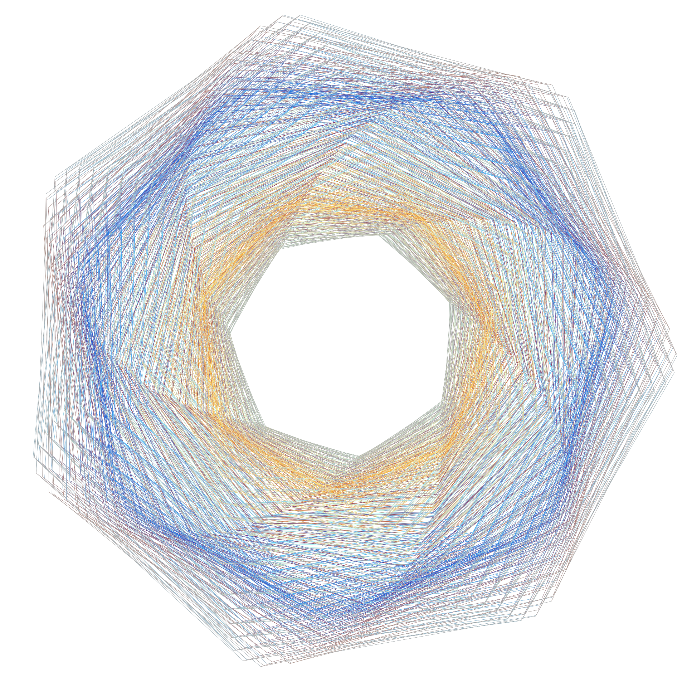
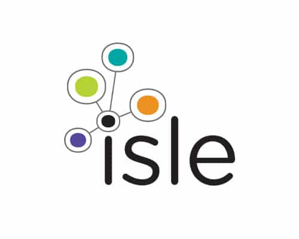
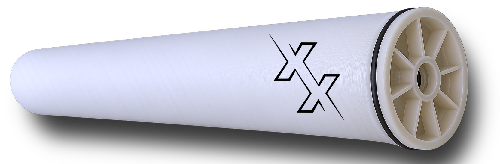

Pre-seed & seed
for the new
water economy.
Venture capital for water technology companies that solve the problems businesses can't afford to ignore.
2026 is the year of water.
The systems are failing.
Record drought years. Infrastructure built in the 1950s. New EPA mandates on forever chemicals. A Fortune 100 executive told us directly: water is the defining industrial challenge of this decade.
Infrastructure gap
U.S. water infrastructure investment needed over 25 years. Pipes, treatment, distribution — the rebuild is overdue and accelerating.
VC funding share
Share of climate-tech venture capital directed at water. Massively underfunded relative to market size and urgency.
on record
Crisis accelerating
Scarcity, flooding, and contamination events are forcing businesses and governments to act now — not in five years.
We don't invest in sustainability plays.
We invest in water companies whose
customers have no choice but to pay.
Winners solve the problems companies care about most — compliance, yield, growth, resilience. Water is the mechanism, not the mission.
Staying out of trouble
Regulatory compliance, PFAS liability, permitting risk. The most urgent water problems are legal and reputational — companies pay because they must, not because they want to.
Growing the business
Water constraints limit production yield, quality, and expansion capacity. Companies pay to remove the constraint — water tech is the unlock, not the product.
Taking control
Businesses and communities want sovereignty over their water future. Decentralized systems, new scales, Water-as-a-Service — owning the resource instead of depending on it.
New business models
The next generation isn't selling equipment — it's selling outcomes. Performance contracts, subscription water, managed services. Recurring revenue in infrastructure.

Personal Water Systems
Isle UtilitiesTechnologist. Networker.
Water expert.
Managed the Technology Approval Group at the world's leading water tech consultancy — the program that connects hundreds of global utilities with breakthrough innovations. Built deep relationships across utilities, regulators, and technology providers worldwide. Expert in advanced wastewater treatment and reuse.
Built and scaled a consulting business focused on research and commercialization of residential and commercial water systems — in the exact spaces Beyond Utility invests in. Revenue has doubled every year for five consecutive years.
Early investor in a UCLA-spinout developing next-generation ultra-high-pressure RO membranes for lithium recovery, desalination, and produced water — co-founded by Dr. Eric Hoek, a 7x founder with 170+ publications and 30+ patents. Proof of the thesis in action.
Limited partners who are water industry insiders — utilities, operators, engineers, and executives — bringing domain expertise and relationships, not just capital.
Sourcing. Selection.
Stewardship.
Next TFX
UCLA Spin Out · Los Angeles, CA

Lithium demand is growing 5x by 2035. Conventional RO membranes can't handle the high salinity and pressure of modern brine concentration. Industries lose yield, spend more energy, and leave critical minerals behind.
Ultra-high-pressure RO membranes — patented three-layer structure tolerating up to 200 bar and 85°C. Double the performance of conventional membranes at substantially lower energy. Enables lithium recovery, high-efficiency desalination, and produced water treatment from the same system.
Lithium miners don't buy this for sustainability — they buy it because it extracts more value from the same brine. Water is the mechanism. Business outcomes — higher recovery, lower opex — are the product.
Three deals in diligence.
Each fits the thesis exactly.
Companies in active diligence — the thesis applied. Each customer pays because the business outcome depends on solving the water problem.
Electrochemical solution for industrial process water — targeting manufacturers who face tightening discharge limits and need to reduce chemical use. Customer pays to stay compliant and cut opex.
Targeting semiconductor fabs facing ultrapure water requirements and nanocontaminant risks that damage yield. Water quality directly drives chip production — the customer can't function without solving this.
AI-native platform for industrial water management — optimization, predictive maintenance, and compliance monitoring for advanced manufacturing. Water intelligence as a recurring service.
12 bets. 4 sectors.
Concentrated ownership.
Conviction follow-on
50% of fund reserved for top performers. We double down on winners — improving ownership retention from ~51% to ~64% at Series A.
Exit pathways
Strategic M&A: Xylem, Veolia, Danaher, industrial conglomerates, ag equipment leaders. We know who buys these companies — and we build toward them from day one.
Treatment Technology
3Industrial process water, contaminant destruction, modular & decentralized systems.
Digital & Software
3Water intelligence, precision ag management, compliance platforms.
Hardware & Sensors
3Monitoring, water-efficient buildings, irrigation & ag hardware.
New Models & Emerging
3Water-as-a-Service, industrial reuse, water markets & risk infrastructure.
Key terms
at a glance.
| Fund Name | Beyond Utility Water Ventures Fund I |
| Vintage | 2026 |
| Target Size | $12,500,000 |
| First Close | April 10, 2026 |
| Stage | Pre-Seed & Seed |
| Sector | Water & wastewater technology |
| Geography | Primarily North America |
| Headquarters | Seattle, WA |
| Check Size | $400,000 |
| Target Ownership | ~7.5% |
| Target Deals | 12 |
| Follow-on Reserves | 50% of fund |
| Investment Period | ~2 years |
| Fund Life | 10 years (+ extensions) |
| Management Fee | 2.0% / year |
| Carried Interest | 20% |
$2.5M committed.
Smart money from inside water.
Our LP base isn't just capital — it's water industry insiders who strengthen our companies before we write the first check.
Committed
First close complete. Anchored by water industry professionals with deep domain expertise and sector relationships.
Near-term pipeline
Active conversations with water industry insiders — smart money that understands what we're building and why now.
Target
Small enough to be disciplined. Large enough to own meaningful positions and reserve for the best performers.
Let's build the future
of water.
Alex Fairhart, General Partner
Seattle, WA
alex@beyondutilityventures.com